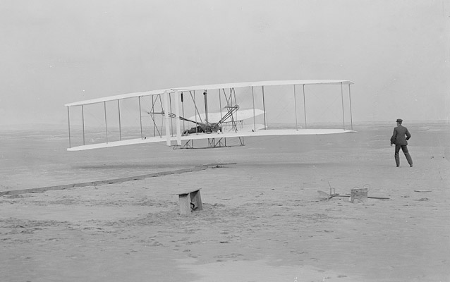

Orville and Wilbur Wright: They taught the world how to fly
Thursday, December 17, 1903, dawned windy and cold on North Carolina's Outer Banks. At Kill Devil Hills, the thermometer hovered around the freezing mark, and a 25-mile-per-hour (40-kilometer-per-hour) wind blowing out of the north made it feel even colder.
Orville and Wilbur Wright had a few doubts about whether this was a good day to try to get their flying machine off the ground. They'd had one setback three days earlier when Wilbur lost control of the craft as he was trying to take off, damaging a wing.
It had taken them a day to repair the damage and get ready to try again, but on December 16 the winds had died to almost nothing and they decided to wait another 24 hours in hopes it would pick back up. Now, with the wind blowing at a strength that could cause them problems trying to control the flyer, they pondered whether to pack it in for the season and come back next year to resume their efforts.
But they didn't want to go back home to Ohio without knowing once and for all whether this design was going to work. So they decided that this day was as good as any to give it one more shot.
The Wrights hauled their wood-metal-and-muslin flyer—which resembled a box kite with propellers—out of its hangar and hoisted a red flag at their camp to signal the nearby U.S. Lifesaving Station that they'd like some help getting the flyer into position.
The modest, hardworking Midwesterners had formed a bond with the taciturn inhabitants of the remote, sparsely populated islands, and they'd had no trouble recruiting willing helpers in the years they'd been coming to the Outer Banks to develop their flyer.
On December 17, crewmen John Daniels, Will Dough, and Adam Etheridge came over from the Lifesaving Station. W.C. Binkley of Manteo and Johnny Moore, a teenager from Nags Head, also showed up to lend a hand.
These five men would witness an event that would change the world forever.